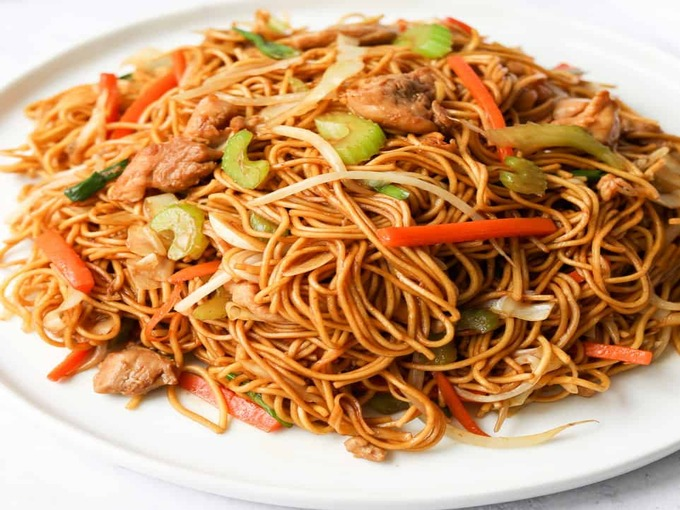

Chicken Chowmein

Description
A classic Indo-Chinese stir-fry dish made with springy noodles, tender slices of chicken, and crunchy vegetables like carrots, capsicum, and onions. Flavored with soy sauce, chili sauce, and a touch of vinegar, it has the perfect balance of savory, spicy, and tangy notes. It’s quick to prepare and is often served hot and glossy right out of the wok.
Ingredients
- 200g boneless chicken (thinly sliced)
- 200g noodles
- 2 tbsp oil
- 1 onion (sliced)
- 1 capsicum (sliced)
- 1 carrot (julienned)
- 2 tbsp soy sauce
- 1 tbsp chili sauce
- 1 tbsp vinegar
- Salt and pepper to taste
Instructions
- Boil the noodles and drain. Toss with 1 tsp oil to prevent sticking.
- Heat oil in a pan, stir-fry chicken until cooked.
- Add onions, capsicum, and carrots. Stir-fry on high flame.
- Mix in soy sauce, chili sauce, vinegar, salt, and pepper.
- Add the boiled noodles and toss well.
- Serve hot.
HOME